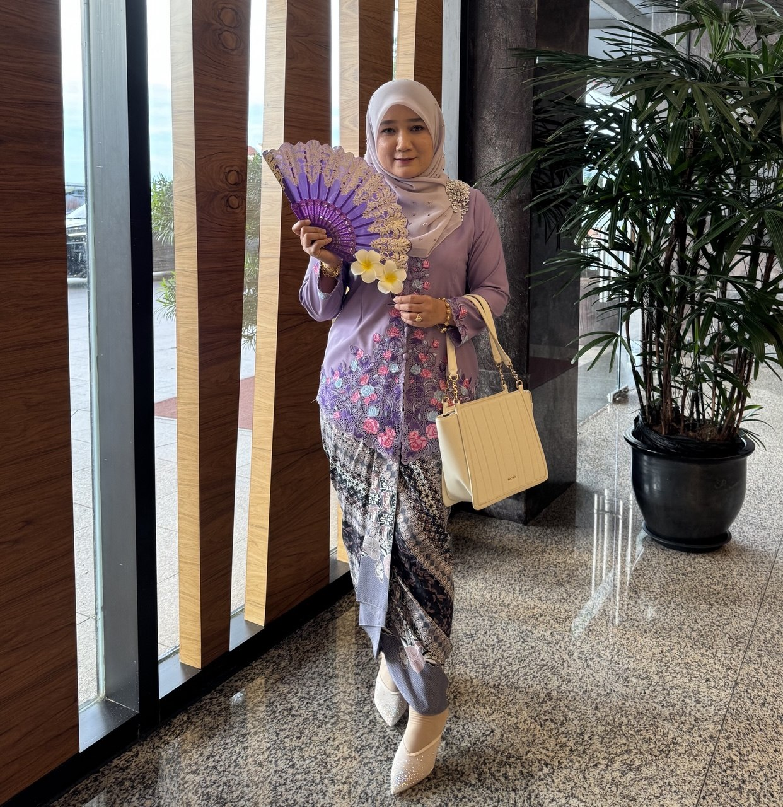

me ♡
Meet My Wonderful Mom ♡
Every picture tells a story, and every memory holds a special place in my heart. This little page is a collection of moments, stories and memories of the woman who means the world to me.
♡ Her Name
NORASHIKIN BINTI MOHAMAD
♡ Her Background
Date of Birth : 23 April 1981
Occupation : Teacher
Workplace : SMK Sungai Tapang
♡ Her Personality
Friendly, caring, hardworking mom and a strong woman.